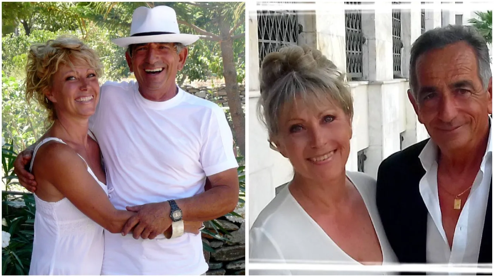

À propos de nous
Deux vies qui se sont rencontrées
dans une oliveraie
Géraldine, originaire de Bordeaux, et George, un Tziotis né à Kea et apiculteur depuis quarante ans.
Notre histoire
Aller jusqu’au bout d’un rêve
Je suis française, originaire de Bordeaux. Après une carrière de 17 ans dans le secteur pharmaceutique, j’ai créé une agence immobilière à Arcachon, près de Bordeaux. Mon amour pour la Grèce remonte à 50 ans, et pendant toutes ces années, j’ai partagé ma vie entre la France et la Grèce.
J’avais toujours eu en tête de m’installer ici définitivement — et, comme je pense qu’il faut toujours aller jusqu’au bout de ses rêves, c’est ce que j’ai fait.
J’adore la décoration, restaurer des meubles anciens, chiner dans les brocantes. J’adore partager un bon repas entre amis, déguster un bon Bordeaux, jardiner, faire des confitures, la photographie… bref, je suis toujours active.
J’ai eu la chance de rencontrer George, qui est né sur l’île de Kea — c’est donc un Tziotis. Il est apiculteur de troisième génération. Ensemble, nous avons agrandi et aménagé avec soin notre deuxième maison à Petrothalassa, à 6 km d’Ermioni. Elle est située dans un cadre exceptionnel qui a conservé son caractère sauvage, et nous partageons le plaisir de recevoir.
George est passionné d’histoire et, bien sûr, apiculteur. Malheureusement, il ne parle ni anglais ni français. Mais en Grèce, nous sommes très attachés au mot « filoxenia » — et alors, tout devient plus facile.
